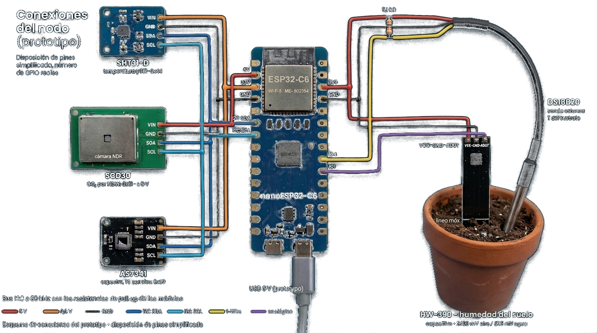

Un nodo de menos de 50 € que mide el microclima, da cada dato con su incertidumbre y se alimenta con energía solar.
Desliza ← → o usa los botones. La incertidumbre está contrastada en dos puntos fijos, no en el CO₂.
Túnel de 36 × 9 m, sin ventanas ni calefacción. Ventila por las puertas.
La humedad alta favorece hongos:
Sin datos del interior del túnel.
Entre un termómetro y un ordenador de clima casi no hay nada.
Toca cada tarjeta.
Toca una fila o una columna.
| Trabajo | T·HR | CO₂ | Luz | Suelo | Solar | U | Cobertura |
|---|---|---|---|---|---|---|---|
| Ardiansah et al.2025 | |||||||
| Trilles et al.2020 | |||||||
| Candeias et al.2022 | |||||||
| SenseCAP S2120comercial | |||||||
| Săcăleanu et al.2024el más parecido | |||||||
| Este trabajo |

Cada sensor, su ritmo y su filtro: todos acaban en un dato cada 10 s.
El CO₂ necesita un FIR más selectivo: con solo 5 muestras, una media no basta.
Se envía la media de 5 min, filtrada antes de diezmar.
Una señal lenta con una componente rápida encima. Al diezmar sin filtrar, lo rápido se disfraza de variación lenta.
Mutex del bus I2C con herencia de prioridad.
Una tarea escribe todos los canales derivados.
Variables derivadas y marca de tiempo.
Cola de salida de 60 mensajes. Si cae la red, la cola conserva los datos.
Unos 3 nodos para 324 m² (Bhujel et al. 2020). Toca cada nodo.
Reparto a 6, 18 y 30 m; los extremos se acercan a las puertas: por la norte entra el cierzo y por la sur el bochorno.
Dos nodos virtuales con datos de Open-Meteo y CAMS.
Fórmula de Magnus (Sonntag, 1990).
Multímetro en serie con la entrada de 5 V.
Los 11,3 mA en reposo son de la placa de desarrollo, no del módulo final.
Un multímetro no recoge los picos de transmisión: sirve para comparar.
El panel da 2,4 veces el consumo medido.
Con el consumo medido y con el de diseño.
Panel en diciembre: 2,4 × 495 ≈ 1190 mAh/día (PVGIS). PENDIENTE: capacidad de la celda 18650
Buen dato, pero gasta demasiado para el sol.
Ahorra, pero pierde lo que hacía bueno al dato.
El SCD30 se lleva alrededor del 90 % del consumo. Con un SCD41 en medida única, el consumo de diseño bajaría de 180 a unos 33 mAh/día.